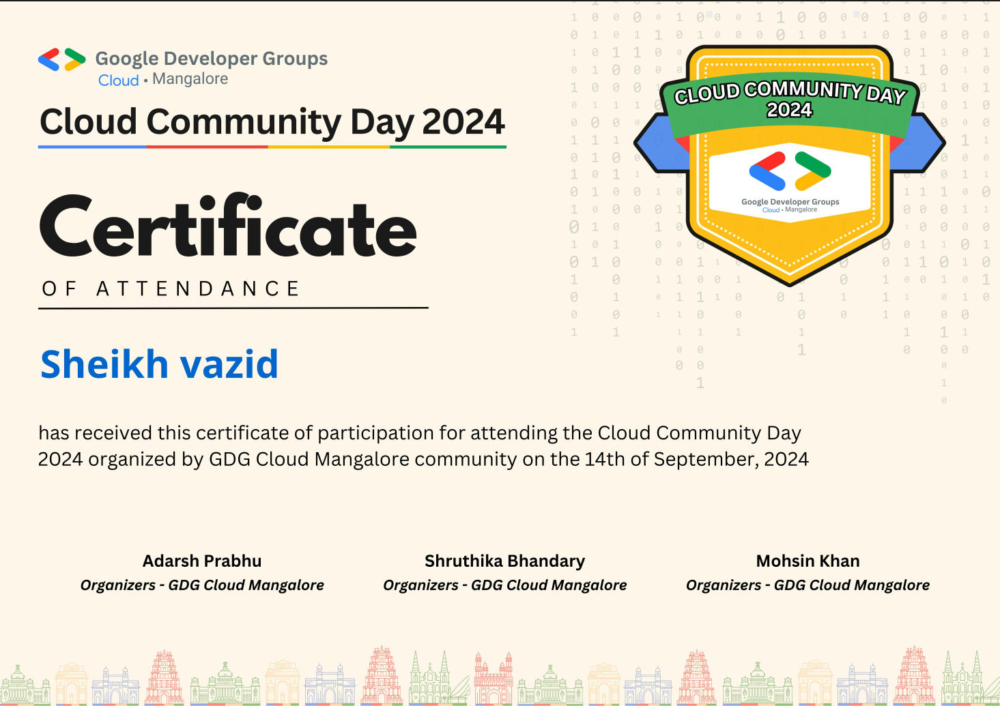

GDG Mangalore 2024: AI on Google Cloud Insights

On September 14, 2024, I had the privilege of attending the Google Developer Groups (GDG) event in Mangalore, organized by Niveus Solutions, a Google Cloud partner. The event focused on AI applications and Google Cloud, providing valuable insights into the latest advancements in these technologies.
Key Sessions and Takeaways
Google AI Studio: Building Production-Ready Applications
First up was Satish VJ, and boy, He took us on a journey through Google AI Studio, showing us how to whip up production-ready apps faster than you can say "machine learning." The cherry on top? His deep dive into LLMs, models, and ML algorithms. But the real showstopper was his demo of gencmd – an app that generates commands with Generative AI.
Satish VJ delivered an enlightening session on leveraging Google AI Studio for developing production-ready applications. Key points included:
- In-depth exploration of Large Language Models (LLMs) and their applications
- Overview of ML algorithms and their integration with Google Cloud services
- Live demonstration of 'gencmd', an application that generates commands using Generative AI
This session provided valuable insights into how AI can be practically applied in software development workflows.
Understanding LLMs and Building AI Agents
Next up, Ashita Prasad, She delved into the fascinating world of LLMs and building AI agents. But it wasn't all theory – we got our a workshop on Google Cloud VertexAI. Building AI agents for Python and Java coding? for you personal coding AI assitent
Ashita Prasad's workshop was particularly engaging, focusing on:
- Fundamental concepts of Large Language Models
- Hands-on experience with Google Cloud VertexAI
- Practical exercises in building AI agents for Python and Java coding tasks
This workshop was instrumental in bridging the gap between theoretical knowledge and practical application of AI in cloud environments.
Securing GCP AI Environments
Imran Roshan's session on AI security in Google Cloud Platform was both informative and engaging. His humorous take on AI and ML security had us in stitches while still dropping knowledge bombs left and right. Who knew security could be this fun? 😂 Key takeaways included:
- Best practices for securing DevOps most kubernetes pod in GCP
- Potential vulnerabilities in AI systems
The session effectively highlighted the critical nature of security in AI implementations, particularly in cloud environments.
Additional Workshops
While I focused on the AI and cloud security tracks, the event also featured popular workshops on Firebase and Flutter, attracting a significant number of student developers. These sessions underscored the growing interest in mobile and web application development using Google technologies.
Certification and Professional Development
The event concluded with the distribution of certificates of attendance, recognizing the participants' commitment to professional development in the field of cloud computing and AI.
Conclusion
The GDG Mangalore event provided a comprehensive overview of the current state and future directions of AI and cloud technologies. As a DevOps engineer and cloud solution architect, the insights gained from this event are invaluable for implementing cutting-edge solutions in my professional projects.
The combination of theoretical knowledge and practical demonstrations offered a well-rounded learning experience, reinforcing the importance of staying updated with the rapidly evolving landscape of cloud and AI technologies.
For professionals and organizations looking to leverage AI and cloud solutions, events like these offer crucial insights and networking opportunities. I encourage fellow technology enthusiasts to participate in future GDG events to stay at the forefront of these transformative technologies.
Contact Me